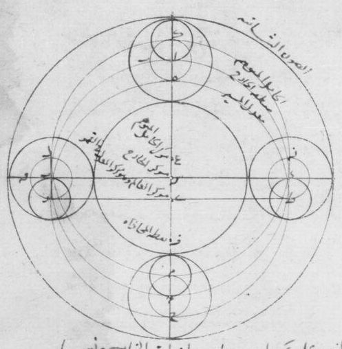

Figure 1: Task. We perform historical astronomical diagram vectorization by predicting
simple geometric primitives, such as lines, circles, and arcs, through a
transformer encoder-decoder model. Our modified decoder queries, which we refer to as a
primitive queries, are associated to different geometric primitives.
Abstract
Automatically extracting the geometric content from the
hundreds of thousands of diagrams drawn in historical manuscripts would
enable historians to study the diffusion of astronomical knowledge on a
global scale. However, state-of-the-art vectorization methods, often designed to tackle modern data,
are not adapted to the complexity and
diversity of historical astronomical diagrams. Our contribution is thus
twofold. First, we introduce a unique dataset of 303 astronomical diagrams from diverse traditions,
ranging from the XIIth to the XVIIIth century, annotated with more than 3000 line segments, circles
and
arcs. Second, we develop a model that builds on DINO-DETR to enable the prediction of multiple
geometric primitives. We show that it
can be trained solely on synthetic data and accurately predict primitives on our challenging
dataset. Our approach widely improves over the
LETR baseline, which is restricted to lines, by introducing a meaningful
parametrization for multiple primitives, jointly training for detection and
parameter refinement, using deformable attention and training on rich
synthetic data.
Method
Given an input image of a diagram, our goal is to output the set of primitives shapes present in the
input together with their parameters. We focus on three primitive classes, Line, Circle, and Arc,
but our model could be extended to more classes. To solve this image-to-set problem, we use the
transformer
encoder-decoder architecture outlined in Figure 2.
Given an input image, the backbone extracts multi-scale
features which are fed to the Transformer encoder along with a positional encoding. The
primitive queries, composed of content (filled) and modified positional (empty) queries, go
through the Transformer decoder where they probe the enhanced encoder features through
deformable cross-attention. Queries are refined layer-by-layer in the decoder, to finally
predict the primitive class, bounding box and parameters.
Our Dataset
Our team of historians has curated a dataset of 303 diagrams so that it spanned diverse relevant
traditions for the history of astronomy, namely Arabic, Latin, Hebrew, Byzantine, Sanskrit,
Chinese, and Greek sources.
This dataset includes diagrams from 27 distinct documents from the 12th to the 18th century,
most of them manuscripts as well as a few Chinese woodblock prints (which were common in ancient
China). This ensures a broad diversity of content, representations, scripts, styles, materials,
digitization quality, and conservation state. These diagrams were annotated by the historians
with circles, arcs and line segments relevant for their analysis, which resulted in a total of
3076 annotated primitives.
Qualitative Results

Acknowledgements
This work was funded by ANR (project EIDA ANR-22-CE38-0014). The work of S.
Trigg is supported by the European Research Council (ERC project NORIA, grant
724175). M. Aubry and S. Kalleli are supported by ERC project DISCOVER funded by
the European Union’s Horizon Europe Research and Innovation program under grant
agreement No. 101076028. We thank Ji Chen, Samuel Guessner, Divna Manolova, and
Jade Norindr for their help in collecting and annotating the dataset, and Sonat
Baltaçi,
Raphaël Baena, Yannis Siglidis, Elliot Vincent, and Malamatenia Vlachou for feedback
and fruitful discussions.
@misc{kalleli2024historical,
title={Historical Astronomical Diagrams Decomposition in Geometric Primitives},
author={Syrine Kalleli and Scott Trigg and Ségolène Albouy and Mathieu Husson and Mathieu Aubry},
year={2024},
eprint={2403.08721},
archivePrefix={arXiv},
primaryClass={cs.CV}}